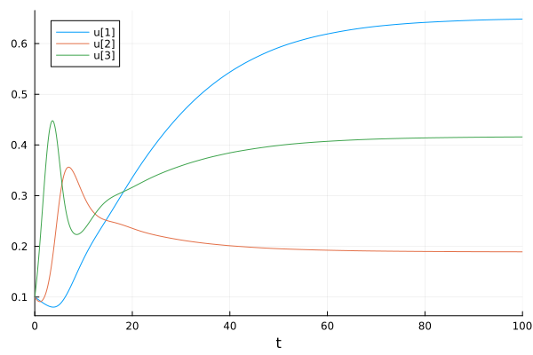

Quick start
This section presents a minimal example to discover how EcologicalNetworksDynamics works. The best is to follow this tutorial by pasting the following code blocks in your Julia terminal.
The first step is to create the structure of the trophic interactions.
using EcologicalNetworksDynamics, Plots
fw = Foodweb([1 => 2, 2 => 3]) # 1 eats 2, and 2 eats 3.blueprint for <Foodweb>: Adjacency {
A: {1: {2}, 2: {3}},
species: <implied blueprint for <Species>>,
}Then, you can generate the parameter of the model (species rates, interaction parameters, etc.) with
m = default_model(fw)Model (alias for EcologicalNetworksDynamics.Framework.System{<internals>}) with 17 components:
- Species: 3 (:s1, :s2, :s3)
- Foodweb: 2 links, 1 producer, 2 consumers, 2 preys, 1 top.
- BodyMass: [100.0, 10.0, 1.0]
- Metabolic classes: [:invertebrate, :invertebrate, :producer]
- Growth rate: [·, ·, 1.0]
- Carrying capacity: [·, ·, 1.0]
- Producers competition: 1.0
- <LogisticGrowth>
- Efficiency: 0.45 to 0.85
- Maximum consumption: [8.0, 8.0, ·]
- Hill Exponent: 2.0
- Consumer preferences: 1.0
- Intra-specific interference: [·, ·, ·]
- Half-saturation density: [0.5, 0.5, ·]
- <BioenergeticResponse>
- Metabolism: [0.09929551852928711, 0.1765751761097696, 0.0]
- Mortality: [0.0, 0.0, 0.0]Parameters can be accessed as follow m.<parameter_name>, for instance, to access species metabolic rates
m.metabolism3-element EcologicalNetworksDynamics.MetabolismRates:
0.09929551852928711
0.1765751761097696
0.0We see that while consumers (species 1 and 2) have a positive metabolic rate, producer species (species 3) have a null metabolic rate. The list of all model properties can be accessed with
properties(m)35-element Vector{Any}:
:A
:K
:M
:S
:body_mass
:carrying_capacity
:competition
:consumers
:d
:e
⋮
:refuge
:richness
:species
:topology
:tops
:trophic
:w
:x
:yOnce our model is ready, we can simulate its dynamic. To do so, we need first to specify species initial biomasses.
B0 = [0.1, 0.1, 0.1] # The 3 species start with a biomass of 0.1.
t = 100 # The simulation will run for 100 time units.
out = simulate(m, B0, t)retcode: Success
Interpolation: 3rd order Hermite
t: 29-element Vector{Float64}:
0.0
0.11699364210598083
0.48617833218898704
1.0368468566268698
1.7139556067464368
2.551396324058539
3.5330334049447143
4.505265217848576
5.8360739275683375
6.967915642966041
⋮
33.58086914720148
38.07154253509167
42.80330902911462
52.63443501185273
58.19052244040714
70.83124657191073
79.50124044283113
96.8286296609048
100.0
u: 29-element Vector{Vector{Float64}}:
[0.1, 0.1, 0.1]
[0.09919287669046291, 0.09822884333138167, 0.10943428041997874]
[0.09662179885024248, 0.09376940942333956, 0.14338556932556454]
[0.09279833833825743, 0.09092616702356371, 0.204977885720663]
[0.08831859483504895, 0.0955005850161038, 0.2918974801362088]
[0.08358086759376752, 0.11717295403615809, 0.39129687974032556]
[0.08033574339252711, 0.1698979263318899, 0.44735045636388826]
[0.08170432183037922, 0.24640046474471963, 0.413604026297541]
[0.09414436920538245, 0.3352635385088793, 0.303924198953081]
[0.11304463220968188, 0.35620385306732855, 0.24559294919372504]
⋮
[0.4960452339407801, 0.2076164928953142, 0.3695578226246156]
[0.5310024728068528, 0.20293534463793605, 0.3804086712091331]
[0.5599454740811309, 0.19930598219434395, 0.3892843494957735]
[0.6008353045620992, 0.19441029976728394, 0.4017765028749461]
[0.6152562947931274, 0.19281709916817044, 0.40602195047089523]
[0.6347834258616118, 0.19066148161449642, 0.41186939033364506]
[0.6414488957526213, 0.18994831882724758, 0.4138287296562797]
[0.6476688888244523, 0.1892859587459852, 0.41567750230182204]
[0.6481900751201196, 0.18923075974907932, 0.41582899549547175]Lastly, we can plot the biomass trajectories using the plot functions of Plots.
plot(out)